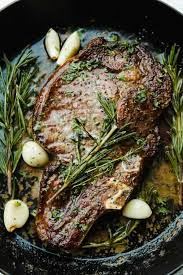

Juicy Sear-Roasted Ribeye Steak

Description
Ribey steak seared in a skillet, then roasted in the oven.
Ingredients
- dry-aged bone-in ribeye steak (26 to 28 oz. and 1.5 to 2 inches thick), at room temperature
- Kosher salt
- 2 tbsp. olive oil
- Freshly ground black pepper
Steps
- Preheat the oven to 375°. Set a wire rack inside a rimmed backing sheet.
- Heat a cast-iron skillet that's just large enough to handle the steak over high for about 3 minutes. Pat the steak dry with paper towels, then season liberally on both sides with kosher salt.
- Add the oil to the pan. Swirl the pan to coat the bottom, then add the steak. Immediately turn the heat down to medium-high. Cook the steak for about 1 minutes, 30 seconds. Using tongs, flip the steak. Cook for another 1 minute, 30 seconds or so, then flip again. Continue like this, flipping the steak every minute, until an instant-read thermometer iserted horizontally into the center of the steak registers 90°, 5 to 8 minutes total.
- Transfer the skillet to the oven and roast the steak for 2 minutes. Flip the steak and roast until the thermometer registers about 120°, another minute or two. As the steak rests, the residual heat will bring it up to 130°, which is medium-rare.
- Transfer the steak to the wire rack. Let the steak rest for at least half the amount of cooking time, flipping it once while it rests. (So if your steak took 10 minutes to cook, let it rest for at least 5 minutes.)
- Cut the steak against the grain into 1/2-inch-thick clices. Arrange on a platter. Drizzle with any juices from the baking sheet. Season with a few cracks of pepper and serve right away.